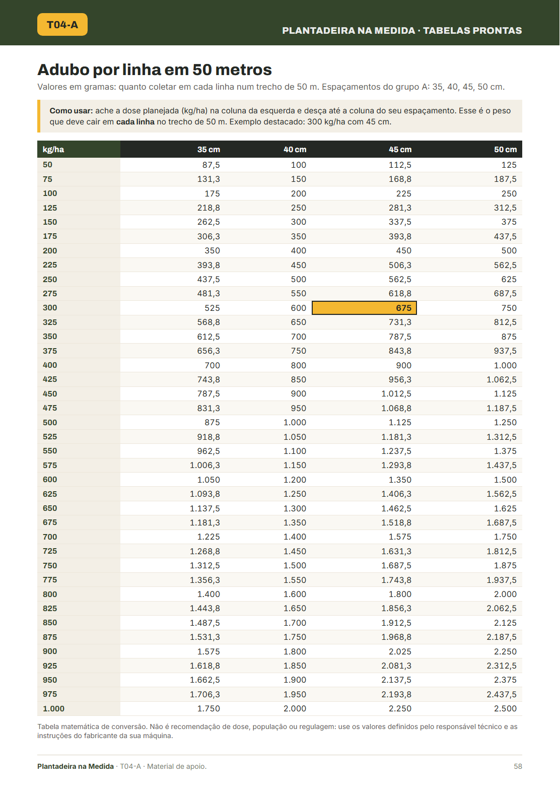
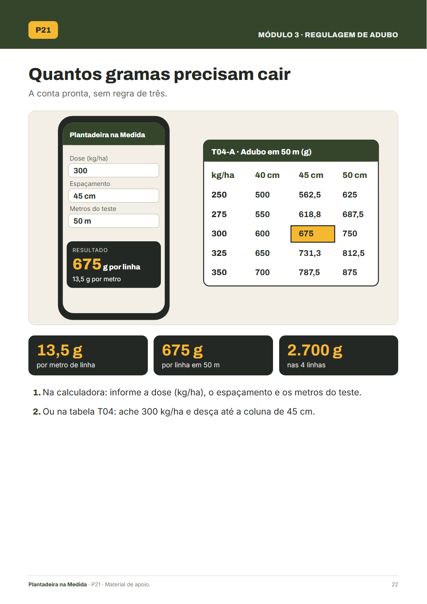
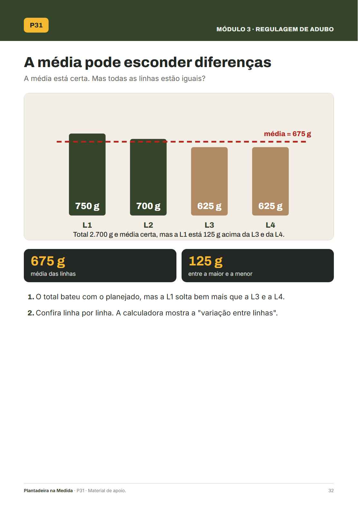
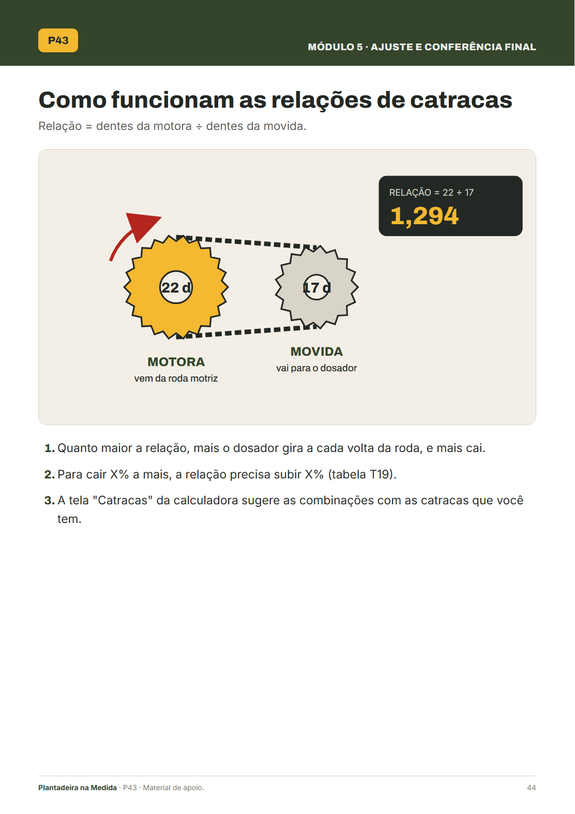
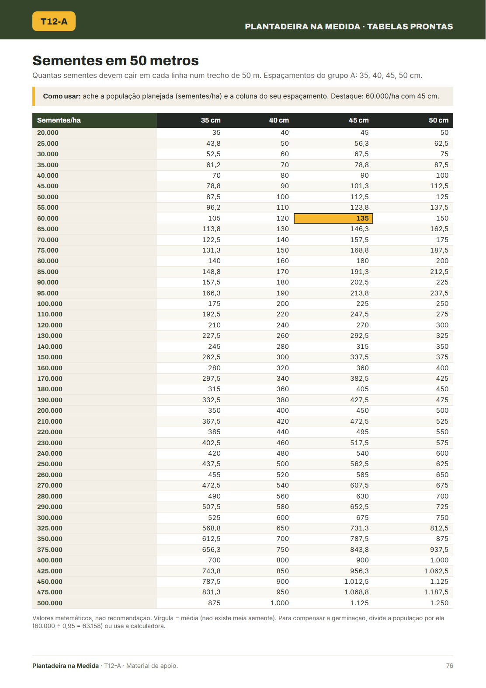
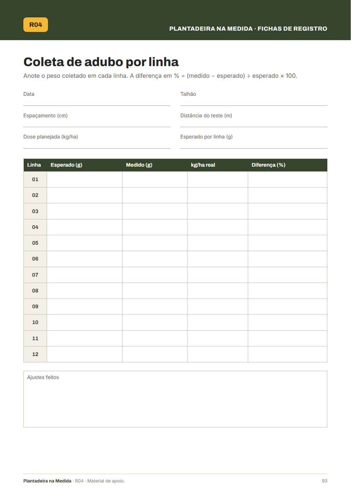

Descubra quantos gramas de adubo e quantas sementes precisam cair em cada linha, com tabelas prontas e um passo a passo para conferir no campo.
Quero a conta prontaVocê sabe a dose de adubo que quer jogar. Sabe a população de sementes. O que trava é transformar isso no número que interessa na hora de regular: quantos gramas têm que cair em cada linha e quantas sementes por metro.
Aí começa a regra de três. Um vídeo explica de um jeito, outro de outro. Você copia a conta, o resultado dá diferente. A caneta e o papel vão para o bolso, a plantadeira vai para o campo, e a dúvida vai junto: será que está caindo certo?
Você acha a sua dose na linha, o seu espaçamento na coluna, e pronto: está ali quanto precisa cair. Depois, o manual mostra como coletar, pesar, contar e conferir, linha por linha, para sair para o plantio sabendo o que a máquina está soltando.
Ver os planosArraste para o lado e veja algumas páginas do kit.






Conheça a plantadeira, prepare o teste, regule o adubo e as sementes e faça a conferência final. Um exemplo do começo ao fim, com desenhos e fotos.
40 páginas de conta pronta: adubo por metro e em 10, 20 e 50 m; sementes por metro e por trecho; peso coletado em kg/ha; catracas; alqueire e tarefa.
Cadastro da máquina, planejamento, checklist, coletas, falhas e duplas, Caderno das Catracas e histórico por safra. Imprima quantas vezes quiser.
Para os valores que não estão na tabela: informe os números e veja o resultado na hora. Confere a coleta de cada linha e sugere a troca de catracas. Funciona até sem sinal.
O kit foi feito para plantadeiras de linhas (tratorizadas). As contas e o método de coleta e conferência valem para qualquer marca, porque usam espaçamento, distância, peso e contagem. O jeito de ajustar cada peça é o do manual do fabricante da sua máquina.
Não. Esses valores vêm do seu planejamento e do responsável técnico. O kit transforma esses números na conta da regulagem (gramas por linha, sementes por metro) e ensina a conferir.
Na hora, no e-mail usado na compra, com o acesso ao PDF. No plano PRO, também o link da calculadora para salvar na tela do celular.
O PDF, depois de baixado, abre sem internet. A calculadora funciona sem sinal depois de aberta uma vez com internet.
Pode. O PDF está no tamanho A4 e as fichas foram feitas para imprimir quantas vezes você quiser.
Não. É uma ferramenta de consulta: abre na página do assunto, acha o número e confere. Sem aula para assistir.